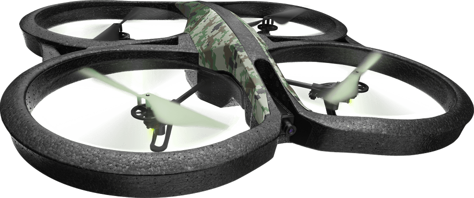
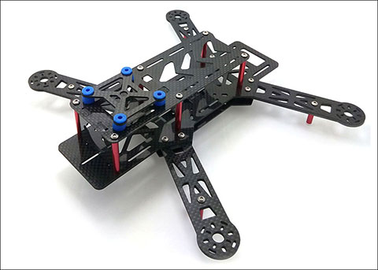
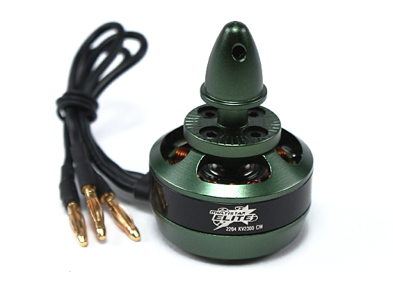

I've always liked robotics from when I was in high school but my inspiration for wanting to participate in this life
style came from the movies Short Circuit.
After watching short circuit
I wanted to build my own so I took a college level robotics class in my highs school were we worked with a few different robot building kits.
We had
competitions to see who could program there drone to sing a certain song or to go through a course using their sensors to detect what was around them.
Big Hero 6, and
Wall-e. It was mainly Big hero 6 and a little bit of wall-e that
made me want to get started in quad drones because of how hard he works in that movie is inspiring to me.
inspired me




The first drone I ever saw that I really wanted was the A.R Parrot drone, which was the first drone I purchased years later
after seeing that ad.
Since getting that drone I've been wanting to build and program my own drone with C++ and the phone app to control
the drone made with Java.
This drone that I'm making is with the Hobby King 250 classic black frame, with
Multistar Elite 2300kv motors, with 6045 props, controlled over wifi
I'm still working on the FPV part of the drone but that will be included later on.
To read more about what will be controlling the drones click here